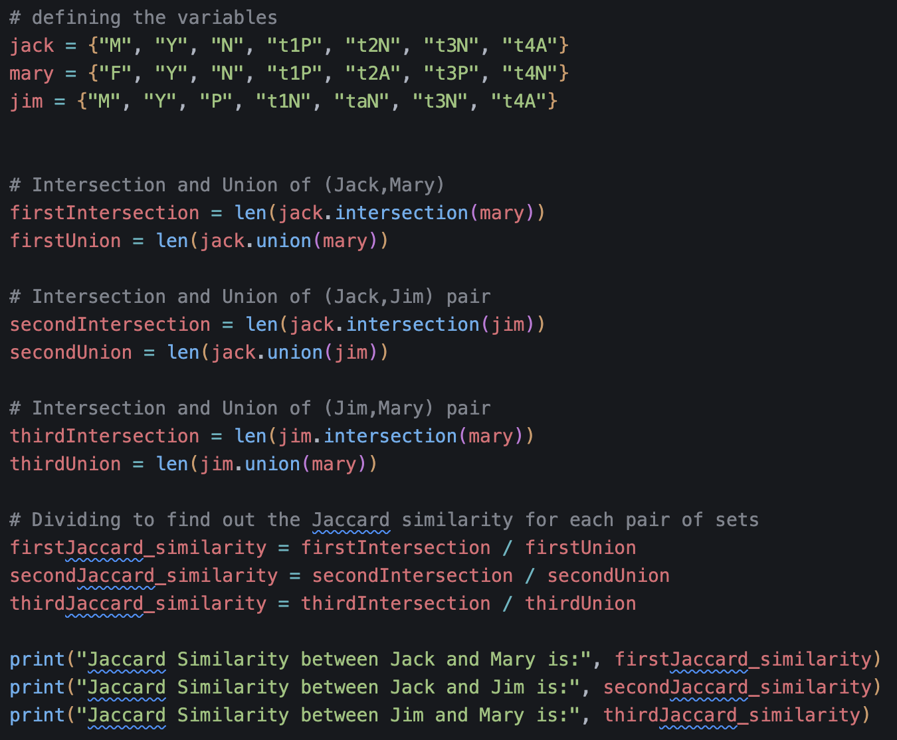

Clustering
Formative Activity
Jaccard Coefficient Calculations
I defined 3 sets, one for each of the patients, and each set has 7 elements, which are strings. The first string in the set is the gender, which is either male or female, the second one is fever (present or not) and the third is cough (present or not). A total of 4 tests have been ran. My thought process was that P in test 1 is different from P in test 3, not knowing if the tests are different or if there are multiple iterations of the same test.
The Jaccard similarity is calculated as the intersection of the two sets (what they have in common)and divided by the union of the two sets (what is found in both combined). The intersection is the number of elements they have in common and the union is the number of elements resulting after combining them. In order to calculate this, I used the built-in methods for sets: intersection and union, after which I found the length and finally divided the result.
The results showcase that there is a 27,3% similarity between Jack and Mary's results, a 40% similarity between Jack and Jim's results, and only a 7,7% similarity between Jim and Mary's results.